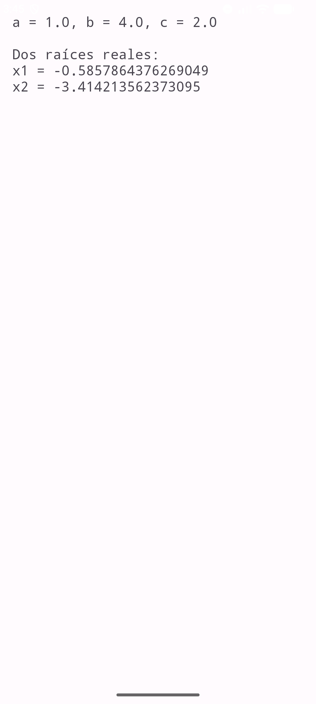
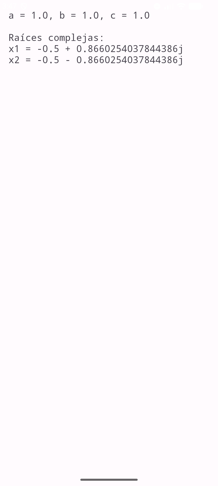

| Asignatura: | Desarrollo de Aplicaciones Móviles Nativas |
| Práctica: | Práctica 6: Intentos en Java |
| Alumno: | Angel Frausto Robles |
| Grupo: | 7CM4 |
| Fecha: | 12 de septiembre de 2026 |
Un Intent es el objeto que usa Android para pedirle a otro componente que haga algo: abrir una pantalla nueva, mandar datos de una actividad a otra o invocar una acción del sistema. Esta práctica parte de un ejemplo que resuelve una ecuación de segundo grado en una pantalla y muestra las raíces en otra, y lo extiende con dos ejercicios: mostrar las raíces complejas con notación algebraica, y una segunda aplicación que envía datos personales de una pantalla a otra con un Intent.
Objetivos:
Intent y putExtra para pasar datos entre dos actividades.
El proyecto tiene cinco actividades: una pantalla de menú (MainActivity) y
dos flujos independientes, cada uno con dos pantallas. Todas extienden
android.app.Activity directamente, sin AppCompat, y todas las interfaces
usan LinearLayout.
EcuacionActivity pide los tres coeficientes en EditText
y, al presionar el botón, arma un Intent explícito hacia ResultActivity con
los tres valores como datos adicionales:
Intent intent = new Intent(EcuacionActivity.this, ResultActivity.class);
intent.putExtra("a", a);
intent.putExtra("b", b);
intent.putExtra("c", c);
startActivity(intent);
ResultActivity los recupera con getDoubleExtra y
calcula el discriminante para decidir entre los tres casos clásicos de la fórmula general.
Cuando el discriminante es negativo, la raíz cuadrada no existe en los números reales. En vez de dejar
que la aplicación truene con Math.sqrt de un número negativo (que en Java
da NaN, no un error, pero tampoco un resultado útil), se calcula la parte
real y la magnitud de la parte imaginaria por separado y se arma el texto a mano con la notación que
pide el ejercicio:
double parteReal = -b / (2 * a);
double parteImaginaria = Math.abs(Math.sqrt(-discriminante) / (2 * a));
resultado = "Raíces complejas:\nx1 = " + parteReal + " + " + parteImaginaria + "j"
+ "\nx2 = " + parteReal + " - " + parteImaginaria + "j";
Se usa Math.abs sobre la parte imaginaria para que siempre se lea
"+ jb" y "- jb"; sin eso, si a fuera negativo el signo se podría invertir y
el texto quedaría con un doble signo negativo, como "+ -0.86j".
Este ejercicio pide una aplicación aparte: una pantalla con cuatro campos (nombre, apellido, correo y
teléfono) que, al presionar "Enviar", los manda por Intent a una segunda pantalla que solo los muestra.
A diferencia del ejemplo de la ecuación, aquí los datos son texto, así que se usa
getStringExtra en vez de getDoubleExtra:
Intent intent = new Intent(DatosActivity.this, MostrarDatosActivity.class);
intent.putExtra("nombre", editNombre.getText().toString());
intent.putExtra("apellido", editApellido.getText().toString());
intent.putExtra("correo", editCorreo.getText().toString());
intent.putExtra("telefono", editTelefono.getText().toString());
startActivity(intent);
Se probaron los tres casos de la ecuación y el flujo completo de datos personales:
| Caso | Entrada | Resultado |
|---|---|---|
| Raíces reales | a=1, b=4, c=2 | x1 = -0.586, x2 = -3.414 |
| Raíces complejas | a=1, b=1, c=1 | x1 = -0.5 + 0.866j, x2 = -0.5 - 0.866j |
| Datos personales | Angel, Frausto Robles, angel@example.com, 5512345678 | Los cuatro datos se muestran en la segunda pantalla |


Comparar el ejemplo de la ecuación con el del Ejercicio 2 deja claro que un Intent no distingue si los
datos que carga son números o texto: el mecanismo (crear el Intent, poner los extras, llamar a
startActivity, leerlos con el get*Extra
correspondiente) es siempre el mismo, solo cambia el método usado para cada tipo. Lo que más trabajo me
costó fue el caso de las raíces complejas, no por el Intent en sí, sino por evitar el signo doble en el
texto final; fue un buen recordatorio de que "que compile" y "que el resultado se lea bien" son cosas
distintas.
https://developer.android.com/guide/components/intents-filtershttps://developer.android.com/reference/android/app/Activity